COVID-19 Time-Varying Reproduction Numbers on Global
Background and Motivation
Currently, COVID-19 has become a global scale threat to our health. Meanwhile, the situation in some regions such as China and Singapore has more or less become stable. To help everyone to be more aware of the global situation, and even hopefully contribute our possibly 3 cents to the intervention of this epidemics, we here calculated the time-varying reproduction number from time series of case numbers in each region on which we can get data and share it on this website. We will update daily when possible.
The basic reproduction number 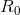, which means roughly the number
of new
individuals will be infected on average by a single infector when there is no intervention at
all,
and the corresponding time-varying reproduction number 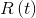 at
time with possibly some interventions, are two important
indicators of
how severe is the epidemics and how effective are the interventions.
Here, we will provide first a time series of for each region on which we get data, and we will also show some predictive results based on very simple and rough extensions, which will be explained in the following.
Methods
While working on analysis of COVID-19 data, we note that the effective time-varing reproduction number of imported cases (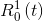) can be very different from the one of local cases (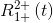) due to the different intervention policy for imported cases and local cases. Thus, we
- classfifed all cases into the imported cases (the zeroth generation)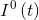, locals infected by the imported cases (first generation) 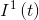 and locals infected by locals (second generation and beyond) 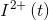,
- derived formula calculating 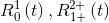 from time series of 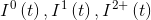,
- Modified the R software EpiEstim according to the newly derived formula.
Also, the test version of the modified EpiEstim has been provided at Github, and the manuscript on this new calculation will soon be posted on an arXiv website.
With the calculated , we constructed two simple and rough scenarios to make some prediction,
- Null Scenario: extend the of a region of interest by
taking
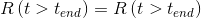, where
is the latest time of the known , that is to say just take the latest value to be the future value of the time-varying reproduction number of a region of interest,
- Typical-Region Scenario: Extend the of a region of interest by connecting to it the 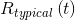 of a chosen typical region, which we use China (cn) and Singapore (sg).
of the two typical regions are decreasing functions since there is no data at the very beginning, and when there are data, usually there are interventions already.
When we connect for example 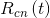 to of a region of interest, we might encouter three cases. Firstly, if the latest value 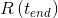 is smaller than some values but at all values of , we find the place 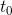 such that 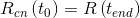 and then let 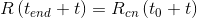. Secondly, if the latest value is larger than all values of , we left extrapolate (for example using the splinefun R function) so that we will find a large enough value such that (here ) and then again we let . Lastly, in principle, there is a case where is smaller than all , but we have not see such a cases in real data.
The Null Scenario is like to ask that if nothing changes what will happen, while the Typical-Region Scenario is to ask when will happen if the region of interest learn from the typical regions and those learned interventions are exactly as effective as they were in the original region.
There are some limitations of the method. First, the scenarios are too simple to be realistic. Second, in many other regions, due to data limitations, we have not distinguished the zeroth, first, second and beyond generations of cases. The method is currently applied to a single-region model, where all the other regions are treated as exogenous variables. In principle, the method is readily applicable to a multi-region situation, where flows among the regions can be estimated via traffic data.
Appendex to the methods section: some core formula
If you are interested in knowing more about our analysis before we publish the paper, here are some core formula:
- Locals infected by imported cases from some specific regions 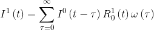, where the zeroth generation refers to the imported cases and locals infected by them are called the first generation
- Locals infected by local infectors, which themselves can be from the first generation or beyond 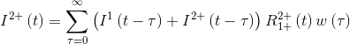, which we call the second generation and beyond
Correspondingly the time-varying reproducton numbers are respectively,
- 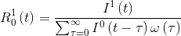
- 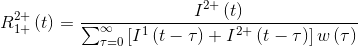
Time-varying reproduction number of typical regions
Here we choose China except Hubei, which is simply due to the lack of data at the beginning of COVID-19 in Hubei, and Singapore as the typical regions as things are more or less under control now in those regions, and also we have a relatively long time series for those regions. Since they will be used as the basis of prediction scenario, here we first show their time-varying reproduction numbers.
Typical region I: China except Hubei
As we mentioned earlier, we classified cases into the imported cases, the locals infected by the imported cases, and the locals infected by the locals, and we estimate the and .

The time-varying reproduction number of China except Hubei, and are calculated saperately. Later, we will only make use of , the blue line. We can see that it starts from large than 2.5 and it reaches less than 0.5 very quickly.

The time-varying reproduction number of China except Hubei, combined .
We should note that the combined is very different from the saperated and .
Please contact us "the Safety Science and Complex System Team" if you want to make use of the data behind this analysis.
Typical region II: Singapore

The time-varying reproduction number of Singapore. Due to the lack of better data, we only calculated the combined . We can see it stars from a little over 2 and it reaches gradually to close to 0.5.
Time-varying reproduction number and some simple prediction of daily cases of some regions
In this section, we will show the calculated time-varying reproduction number of some regions. Again due to the lack of better data, we only calculated the combined of both imported and local infectors. Based on the calculated and the above known of the typical regions, we also made some simple prediction of daily cases of those regions.
France
Time-varying reproduction number of France

Time-varying reproduction number of France, the combined
Predictions of France: Null Scenario

Null Scenario predictions of France. If the time-varying reproduction number of France stays the same, this is what will happen.
Predictions of France: Typical-region Scenario

Typical-Region scenario predictions of France, based on China except Hubei. If the time-varying reproduction number of France take the track of the one of China except Hubei, this is what will happen.

Typical-Region scenario predictions of France, based on Singapore. If the time-varying reproduction number of France take the track of the one of Singapore, this is what will happen.
Germany
Time-varying reproduction number of Germany

Time-varying reproduction number of Germany, the combined
Predictions of Germany: Null Scenario

Null Scenario predictions of Germany. If the time-varying reproduction number of Germany stays the same, this is what will happen.
Predictions of Germany: Typical-region Scenario

Typical-Region scenario predictions of Germany, based on China except Hubei. If the time-varying reproduction number of Germany take the track of the one of China except Hubei, this is what will happen.

Typical-Region scenario predictions of Germany, based on Singapore. If the time-varying reproduction number of Germany take the track of the one of Singapore, this is what will happen.
Iran
Time-varying reproduction number of Iran

Time-varying reproduction number of Iran, the combined
Predictions of Iran: Null Scenario

Null Scenario predictions of Iran. If the time-varying reproduction number of Iran stays the same, this is what will happen.
Predictions of Iran: Typical-region Scenario

Typical-Region scenario predictions of Iran, based on China except Hubei. If the time-varying reproduction number of Iran take the track of the one of China except Hubei, this is what will happen.

Typical-Region scenario predictions of Iran, based on Singapore. If the time-varying reproduction number of Iran take the track of the one of Singapore, this is what will happen.
Italy
Time-varying reproduction number of Italy

Time-varying reproduction number of Italy, the combined
Predictions of Italy: Null Scenario

Null Scenario predictions of Italy. If the time-varying reproduction number of Italy stays the same, this is what will happen.
Predictions of Italy: Typical-region Scenario

Typical-Region scenario predictions of Italy, based on China except Hubei. If the time-varying reproduction number of Italy take the track of the one of China except Hubei, this is what will happen.

Typical-Region scenario predictions of Italy, based on Singapore. If the time-varying reproduction number of Italy take the track of the one of Singapore, this is what will happen.
Japan
Time-varying reproduction number of Japan

Time-varying reproduction number of Japan, the combined
Predictions of Japan: Null Scenario

Null Scenario predictions of Japan. If the time-varying reproduction number of Japan stays the same, this is what will happen.
Predictions of Japan: Typical-region Scenario

Typical-Region scenario predictions of Japan, based on China except Hubei. If the time-varying reproduction number of Japan take the track of the one of China except Hubei, this is what will happen.

Typical-Region scenario predictions of Japan, based on Singapore. If the time-varying reproduction number of Japan take the track of the one of Singapore, this is what will happen.
Korea
Time-varying reproduction number of Korea

Time-varying reproduction number of Korea, the combined
Predictions of Korea: Null Scenario

Null Scenario predictions of Korea. If the time-varying reproduction number of Korea stays the same, this is what will happen.
Predictions of Korea: Typical-region Scenario

Typical-Region scenario predictions of Korea, based on China except Hubei. If the time-varying reproduction number of Korea take the track of the one of China except Hubei, this is what will happen.

Typical-Region scenario predictions of Korea, based on Singapore. If the time-varying reproduction number of Korea take the track of the one of Singapore, this is what will happen.
Spain
Time-varying reproduction number of Spain

Time-varying reproduction number of Spain, the combined
Predictions of Spain: Null Scenario

Null Scenario predictions of Spain. If the time-varying reproduction number of Spain stays the same, this is what will happen.
Predictions of Spain: Typical-region Scenario

Typical-Region scenario predictions of Spain, based on China except Hubei. If the time-varying reproduction number of Spain take the track of the one of China except Hubei, this is what will happen.

Typical-Region scenario predictions of Spain, based on Singapore. If the time-varying reproduction number of Spain take the track of the one of Singapore, this is what will happen.
UK
Time-varying reproduction number of UK

Time-varying reproduction number of UK, the combined
Predictions of UK: Null Scenario

Null Scenario predictions of UK. If the time-varying reproduction number of UK stays the same, this is what will happen.
Predictions of UK: Typical-region Scenario

Typical-Region scenario predictions of UK, based on China except Hubei. If the time-varying reproduction number of UK take the track of the one of China except Hubei, this is what will happen.

Typical-Region scenario predictions of UK, based on Singapore. If the time-varying reproduction number of UK take the track of the one of Singapore, this is what will happen.
USA
Time-varying reproduction number of USA

Time-varying reproduction number of USA, the combined
Predictions of USA: Null Scenario

Null Scenario predictions of USA. If the time-varying reproduction number of USA stays the same, this is what will happen.
Predictions of USA: Typical-region Scenario

Typical-Region scenario predictions of USA, based on China except Hubei. If the time-varying reproduction number of USA take the track of the one of China except Hubei, this is what will happen.

Typical-Region scenario predictions of USA, based on Singapore. If the time-varying reproduction number of USA take the track of the one of Singapore, this is what will happen.